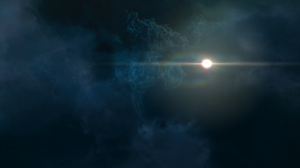

It’s great to see other Exploration blogs out there and Motoko Rei of “Into the Ether” is a great one to visit. What I like about Motoko’s blog is the wandering nature of a solo explorer from interesting High Sec sites to Low Sec, Null Sec, and Wormholes. He’s captured some fantastic images along the way and has certainly developed a piloting skill to be admired in order to navigate all that New Eden has to offer. Motoko has been flying the cluster since July of 2013, just a little over a year now, and through his blog he’s shared his experiences so far. Be sure to check out “Into the Ether” if you’re someone who’s interested in seeing New Eden. You’ll learn, as I’ve learned doing my own exploration, fear is no reason to deny your explorer’s heart.
What attracted you to EVE Online and how long have you played?
I read that Eve Online was complicated, which first peaked my interest. I like the idea that there needs to be some investment in order to fully experience the game. I next discovered the player community (bloggers at first) and thought that a game which can inspire such dynamic player creativity in terms of blogger output (stories, articles, critique, player experience) must have something special about it. I have been playing for over a year.
How would you describe your characters career path?
I started out running missions and mining in high security space for 2 or 3 months. It seemed like that gameplay was going nowhere fast so I decided to seek out a corporation that could accommodate my play schedule and help me get more out of the game. At the time, Touring New Eden was being advertised as a pacifist corporation – which did not especially draw me in, but it was something I didn’t mind trying out if there were other selling features. I joined Touring because it was also geared for solo pilots and it could teach people how to travel safely through hostile territory.
This is where the game opened up for me. Another corporation declared war and rather than having the newer pilots dock up – we were encouraged to head out into null-sec with our T1 frigates (after first reading up on how to do so, safely). I took a Magnate and headed out to an NPC station way out in Null-sec – completely prepared to have that ship destroyed – and to my surprise I made it.
What attracted you to explore New Eden? What is your goal and have you achieved it? If not, are you still working towards your goal, do plan to continue, or what are you currently doing?
After I found myself pretty far into Null-security space I first started to explore. I was checking out some local sites, then scanning down exploration sites and then scanning down wormholes. I really liked the feeling of discovering new places in the game for myself. Once I started I kept going. Wormholes are the most fascinating for me.
My goal is to continue exploring New Eden to its fullest. More specifically, that means learning more about wormholes first hand, seeing some of the notable sites out there, mining exotic ores and fullerenes. I hope to do all this with some pvp added to the mix.
While doing all this exploring I found that I was severely lacking in the PVP aspect of the game. I was having trouble dealing with Sleepers and also wanted to be able to engage other capuleers in combat. So I left Touring New Eden and joined Open University of Celestial Hardship (OUCH). Here I was quickly taught the basics of pvp combat. I decided to join their Operations Department in order to continue to learn and enhance the pvp aspect of my game as well as teach others the introductory modules in the OUCH training program.
Lately my exploring has been making excursions to some of the interesting sites I have read about. I hope to visit Titanomachy next and some more wormholes.
What is the name of your favorite ship that you enjoy flying the most while exploring? Why is it your favorite? Would you mind sharing your fit?
It really depends on what my intent of the journey is. If I am site running or wanting to fly cloaked it’s the Anathema (for aesthetics). If I am going for a quick visit somewhere it’s usually the Ares (for the 4 low slots). Mining or gas excursions into wormholes was the Venture (I’m so excited for the ORE Expedition Frigate, the Prospect, to come out soon). I am working my way up to T3 Cruisers as well. I kind of feel like I have not found my favorite yet.
During your research and travels, what has been the most interesting fact, amazing sight, or other aspect of New Eden that surprised you?
The most amazing sites for me have been the wormhole nebula. They are varied and look absolutely incredible. I also really enjoy seeing Sleepers and Rogue Drones up close.
What have you learned or what advice would you give to someone interested in exploring New Eden?
I would advise anyone who was interested in exploring New Eden to learn some basic null-sec traveling from another capsuleer or corporation and then jump in. The basics are very easy to learn and then the whole of New Eden is yours to discover.
Do you have a favorite image that you wouldn’t mind me posting and sharing from your explorations?
I have many images I have taken that are favorites. If I have to pick one I'll go with the cloaked Anathema floating before a wormhole nebula. It's peaceful.

Cloaked Anathema floating before a wormhole nebula
Comments
"Thanks for the interview Katia! A great experience.Please keep introducing us to more explorers!!" - Motoko Rei
{kind=link}
{kind=link}
{kind=link}
{kind=link}
{kind=link}